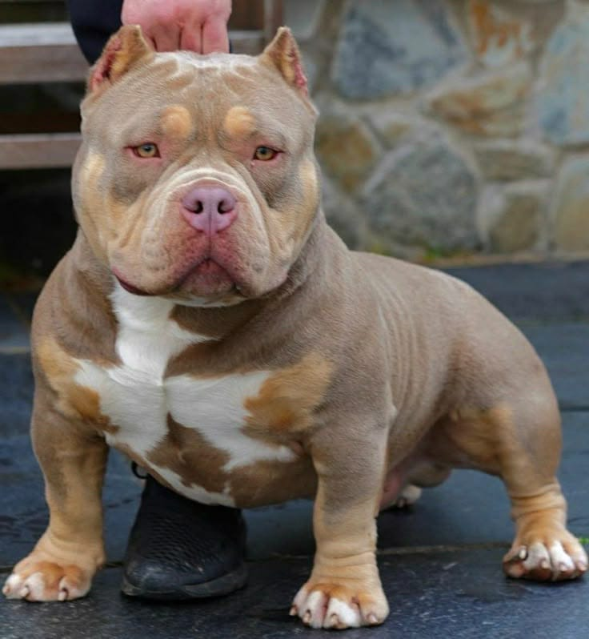
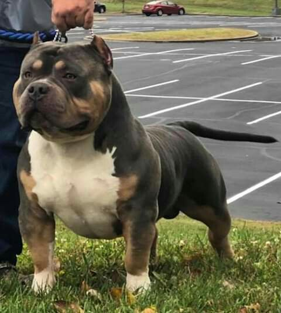
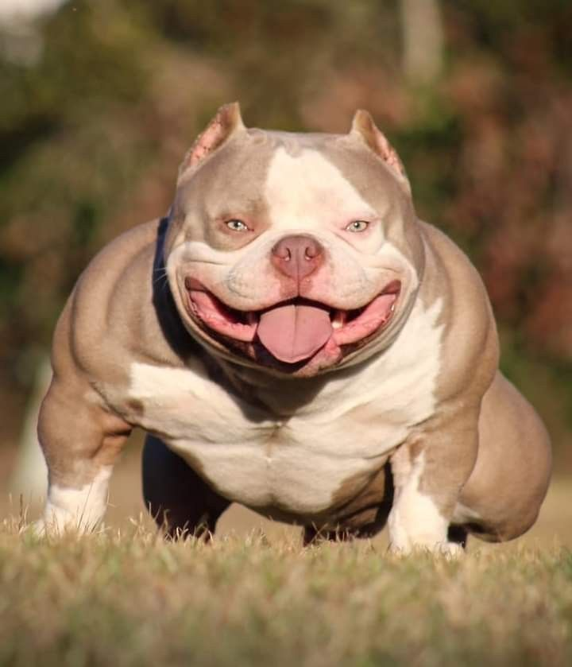

O American Bully é uma raça de cachorro relativamente nova, criada nos Estados Unidos na década de 1990.
Ele foi desenvolvido através do cruzamento entre o American Pit Bull Terrier e o American Staffordshire
Terrier, além de outras raças do tipo bully. O objetivo era criar um cachorro com aparência musculosa
e forte, mas com temperamento amigável e dócil, ideal para convivência familiar.
A raça foi oficialmente reconhecida pelaAmerican Bully Kennel Club em 2004.
O American Bully é conhecido pelo corpo forte e musculoso.
Principais características:
Eles podem ter várias colorações, como:
Apesar da aparência intimidadora, o American Bully é conhecido por ser:
Existem diferentes categorias de raça, baseadas principalmente no tamanho
o American Bully precisa de uma alimentação equilibrada para manter sua saúde
e musculatura. A dieta geralmente inclui:
Alguns cuidados importantes:
Problemas de saúde que podem ocorrer:
O American Bully tem uma expectativa de vida de 10 a 15 anos, desde que
receba cuidados adequados e uma alimentação saudável.
O American Bully é uma raça que combina força, lealdade e carinho. Apesar
da aparência robusta, é um cachorro extremamente amigável e adequado para
famílias quando bem treinado e cuidado.


